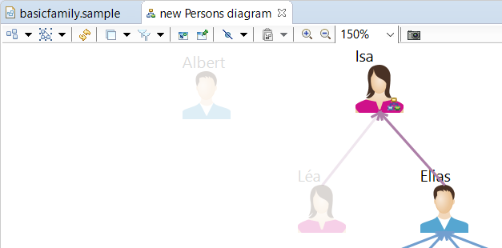
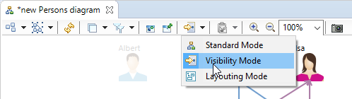
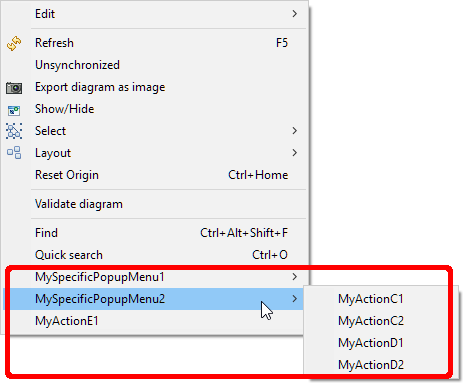
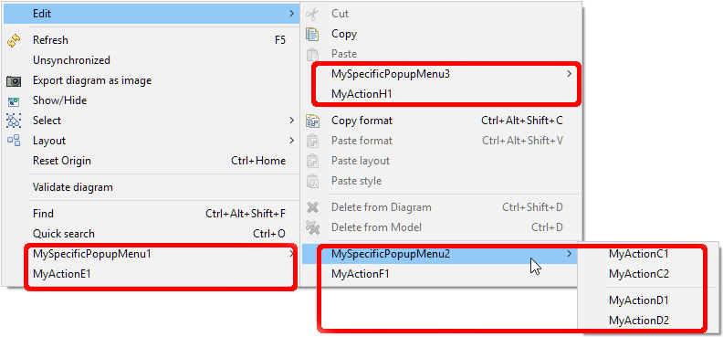

This document contains the release notes for recent major releases of Sirius. See also the release notes from previous versions for details about older releases.
There are no user-visible changes in Sirius 6.2.2 compared to 6.2.1. The only changes are internal and related either to the build process or to the automated tests.
org.eclipse.sirius
org.eclipse.sirius.business.api.query.DRepresentationQuery.DRepresentationQuery(DRepresentation, Session) to compute queries directly from the given session instead of computing it.
viewpoint.ecore, the
UIState class has a new
subDiagramDecorationDescriptors attribute. It is used as a cache to speed up sub diagram decorations computing.
RefreshHelper.registerImpactingNotification(Predicate<Notification>) to consider a specific graphical changes. An example is the possibility to launch a refresh when the region container is collapsed or expanded. See
Trigger a Sirius refresh on specific graphical changes in the developer documentation for more details.
org.eclipse.sirius.tools.api.ui.RefreshHelper.isAutoRefresh() has been added to know if Sirius is in automatic refresh mode or in manual mode.
org.eclipse.sirius.tools.api.ui.RefreshHelper.registerImpactingNotification(Predicate<Notification>) and
org.eclipse.sirius.tools.api.ui.RefreshHelper.unregisterImpactingNotification(Predicate<Notification>) have been added to allow to consider some graphical modifications as requiring a refresh. By default, only semantic changes are considered as requiring a refresh.
org.eclipse.sirius.business.api.helper.task.NotificationTask class has been removed. It was not used anywhere.
org.eclipse.sirius.tests.swtbot.support
org.eclipse.sirius.tests.swtbot.support.api.widget.SWTBotSiriusFigureCanvas.mouseMoveLeftClick(int, int, boolean, int[]),
org.eclipse.sirius.tests.swtbot.support.api.editor.SWTBotSiriusGefViewer.click(int, int, boolean, int[]),
org.eclipse.sirius.tests.swtbot.support.api.editor.SWTBotSiriusDiagramEditor.clickWithKeys(String, int...), have been added to make a mouse click with key modifiers for a multi selection for example.
org.eclipse.sirius.tests.swtbot.support.api.editor.SWTBotSiriusHelper.selectPropertyTabItem(String, SWTBot) has been added. It allows to look for property tab from a given bot. The bot corresponding to the property view should be given otherwise the search could fail starting from Eclipse 2019-06.
org.eclipse.sirius.tests.swtbot.support.api.editor.SWTBotSiriusHelper.getShellBot(String) has been added and allows to retrieve a bot related to a shell with the given label.
org.eclipse.sirius.tests.swtbot.support.api.editor.SWTBotSiriusHelper.menu(SWTBot, String) has been added and allows to retrieve a menu even when the active shell is null. Should be used over
SWTBot.menu(String) method.
org.eclipse.sirius.common
org.eclipse.sirius.common.tools.api.interpreter.IConverter has been added: it encapsulates the coercion rules used to convert raw results returned by interpreted expressions into the types expected by Sirius (depending on the context of use of the expression).
org.eclipse.sirius.common.tools.api.interpreter.IInterpreter, a new method
getConverter() has been added to obtain the
IConverter for a given interpreter.
org.eclipse.sirius.common.tools.api.interpreter.EvaluationResult has been added. It serves as a default implementation of
IEvaluationResult. It provides static factory methods for common cases (successful evaluation or failure).
org.eclipse.sirius.common.tools.api.interpreter.TypeName, the methods
getJavaClass() and
getPackagePrefix() which used to return a
org.eclipse.sirius.ext.base.Option<T> now return standard
java.util.Optional<T> instead.
org.eclipse.sirius.common.tools.api.profiler.ProfilerTaskRegistry, the method
get(String) which used to return a
org.eclipse.sirius.ext.base.Option<T> now return standard
java.util.Optional<T> instead.
org.eclipse.sirius.common.tools.api.query.NotifierQuery, the method
getAdapter(Class<?>) which used to return a
org.eclipse.sirius.ext.base.Option<T> now return standard
java.util.Optional<T> instead.
org.eclipse.sirius.common.tools.api.resource.ResourceSetSync, the method
getResourceSetSync(TransactionalEditingDomain) which used to return a
org.eclipse.sirius.ext.base.Option<T> now return standard
java.util.Optional<T> instead.
org.eclipse.sirius.common.tools.api.util.MarkerUtil, the method
addMarkerFor(IResource, String, int, String) which used to return a
org.eclipse.sirius.ext.base.Option<T> now return standard
java.util.Optional<T> instead.
org.eclipse.sirius.common.tools.api.util.ReflectionHelper, all the following methods which used to return a
org.eclipse.sirius.ext.base.Option<T> now return standard
java.util.Optional<T> instead:
setConstructorVisibleWithoutException(Class<? extends Object>, Class<?>...)
setFieldVisibleWithoutException(Class<? extends Object>, String),
getClassForNameWithoutException(String),
instantiateWithoutException(String, Class<?>[], Object[]),
getFieldValueWithoutException(Object, String),
getFieldValueWithoutException(Class<? extends Object>, String), and
getFieldValueWithoutException(Object, String, Class<? extends Object>).
org.eclipse.sirius.common.tools.api.interpreter.IInterpreterWithDiagnostic.IEvaluationResult has been promoted as a top-level type as
org.eclipse.sirius.common.tools.api.interpreter.IEvaluationResult. In the process it has gained several methods to check for success and coerce the raw evaluation result into any of the types that are used by Sirius (depending on the usage context).
org.eclipse.sirius.common.tools.api.interpreter.IInterpreter (and all its implementations shipped with Sirius), the methods
addVariableStatusListener() and
removeVariableStatusListener() have been removed, along with the corresponding type
org.eclipse.sirius.common.tools.api.interpreter.IVariableStatusListener. These correspond to obsolete and unused mechanisms.
interface org.eclipse.sirius.common.tools.api.interpreter.IInterpreterWithDiagnostic has been removed. The single method it defined,
evaluateExpression(), is now implemented directly by the main
IInterpreter interface. In effect, all
IInterpreter are now “with diagnostic”.
org.eclipse.sirius.tools.api.interpreter.context.SiriusInterpreterContextFactory has been removed from the API (it has been moved into an internal package): it should only be needed by Sirius itself and has no reason to be exposed as public API.
org.eclipse.sirius.common.ui
org.eclipse.sirius.common.ui.tools.api.dialog.quickoutline.QuickOutlineDescriptor, the methods
getFirstPage() and
getNextPage(QuickOutlinePageDescriptor) which used to return a
org.eclipse.sirius.ext.base.Option<T> now return standard
java.util.Optional<T> instead.
org.eclipse.sirius.diagram.layoutdata
org.eclipse.sirius.diagram.formatdata
org.eclipse.sirius.diagram
org.eclipse.sirius.diagram.Messages.SynchronizeGMFModelCommand_label has been added. It replaces
org.eclipse.sirius.diagram.ui.provider.Messages.SynchronizeGMFModelCommand_label.
org.eclipse.sirius.diagram.business.api.query.DragAndDropTargetQuery, a new method
getLogicalChildren() has been added. It makes it easy to iterate over the logical structure of diagram elements. A static factory method
on() was also added to provide a more fluent API, e.g.
DragAndDropTargetQuery.on(container).getLogicalChildren().
org.eclipse.sirius.diagram.tools.api.command.IDiagramCommandFactory.buildInsertVerticalBlankSpaceCommand(DDiagram, int, int) has been renamed to
org.eclipse.sirius.diagram.tools.api.command.IDiagramCommandFactory.buildInsertOrRemoveVerticalBlankSpaceCommand(DDiagram, int, int) because it handles now both addition and removal.
org.eclipse.sirius.diagram.business.internal.metamodel.helper.ContentHelper has been moved in a new class called
org.eclipse.sirius.diagram.business.internal.metamodel.helper.ContentLayerHelper to ensure method to be independent from pure Sirius code.
diagram.ecore. This is the ones that are computed outside of EMF environment with dependencies to IInterpreter or that are deprecated. The following EOperations have been removed/replaced:
DEdge.isRootFolding has been removed
DDiagram.getNodesFromMapping has been replaced by
DDiagramSpecOperations.getNodesFromMapping
DDiagram.getEdgesFromMapping has been replaced by
DDiagramSpecOperations.getEdgesFromMapping
DDiagram.getContainersFromMapping has been replaced by
DDiagramSpecOperations.getEdgesFromMapping
DiagramElementMapping.checkPrecondition has been replaced by
SiriusElementMappingSpecOperations.checkPrecondition
DiagramElementMapping.getAllMappings has been replaced by
MappingHelper.getAllMappings
DiagramElementMapping.isFrom has been replaced by
SiriusElementMappingSpecOperations.isFrom
AbstractNodeMapping.clearDNodesDone has been replaced by
NodeMappingHelper.clearDNodesDone
AbstractNodeMapping.addDoneNode has been replaced by
NodeMappingHelper.addDoneNode
AbstractNodeMapping.getAllBorderedNodeMappings has been replaced by
MappingHelper.getAllBorderedNodeMappings
NodeMapping.createNode has been replaced by
NodeMappingHelper.createNode. You must verify that
NodeMapping is an
INodeMappingExt before calling this method. Previously, in other cases, when a
NodeMapping is not
INodeMappingExt, an
UnsupportedOperationException was thrown.
NodeMapping.updateNode has been replaced by
NodeMappingHelper.updateNode
NodeMapping.updateListElement has been replaced by
NodeMappingHelper.updateListElement
NodeMapping.getNodesCandidates(semanticOrigin,container) has been replaced by
NodeMappingHelper.getNodesCandidates(semanticOrigin,container)
NodeMapping.getNodesCandidates(semanticOrigin,container,containerView) has been replaced by
NodeMappingHelper.getNodesCandidates(semanticOrigin,container,containerView)
ContainerMapping.getBestStyle has been replaced by
ContainerMappingWithInterpreterHelper.getBestStyle
EdgeMapping.createEdge(source,target,semanticTarget) has been replaced by
EdgeMappingHelper.createEdge(EdgeMapping, EdgeTarget, EdgeTarget, EObject, EObject)
EdgeMapping.createEdge(source,target,container,semanticTarget) has been replaced by
EdgeMappingHelper.createEdge(EdgeMapping, EdgeTarget, EdgeTarget, EObject, EObject)
EdgeMapping.getBestStyle has been replaced by
MappingWithInterpreterHelper.getBestStyle
EdgeMapping.updateEdge has been replaced by
EdgeMappingHelper.updateEdge
EdgeMapping.getEdgeTargetCandidates(semanticOrigin,viewPoint) has been replaced by
EdgeMappingHelper.getEdgeTargetCandidates
EdgeMapping.getEdgeSourceCandidates has been replaced by
EdgeMappingHelper.getEdgeSourceCandidates
EdgeMapping.getEdgeTargetCandidates(semanticOrigin,container,containerView) has been replaced by
EdgeMappingHelper.getEdgeTargetCandidates
EdgeCreationDescription.getBestMapping has been removed because it is never used.
ContainerDropDescription.getBestMapping has been replaced by
ContainerMappingWithInterpreterHelper.getBestMapping
Filter.isVisible has been replaced by
FilterService.isVisible(Filter, DDiagramElement)
VariableFilter.resetVariables has been replaced by
VariableFilterWrapper.resetVariables
DiagramDescription.allNodeMappings has been replaced by
ContentHelper.getAllNodeMappings (with
false value for parameter
withoutOptionalLayers)
DiagramDescription.allContainerMappings has been replaced by
ContentHelper.getAllContainerMappings (with
false value for parameter
withoutOptionalLayers)
DiagramDescription.allLayers has been replaced by
LayerHelper.getAllLayers
ContainerMapping.allNodeMappings has been replaced by
ContainerMappingHelper.getAllNodeMappings
ContainerMapping.allContainerMappings has been replaced by
ContainerMappingHelper.getAllContainerMappings
Layer.allEdgeMappings has been replaced by
ContentLayerHelper.getAllEdgeMappings
org.eclipse.sirius.diagram.ui
org.eclipse.sirius.diagram.ui.business.api.query.EditPartQuery.getDDiagram() has been added to retrieve the
DDiagram associated to the edit part or to one of its ancestor.
org.eclipse.sirius.diagram.ui.provider.Messages.SynchronizeGMFModelCommand_label has been removed. It has been replaced in
org.eclipse.sirius.diagram.Messages.
layoutDataManager, deprecated since Sirius 4.1.0, has been removed. The corresponding plug-in
org.eclipse.sirius.diagram.layoutdata has also been removed.
org.eclipse.sirius.diagram.ui.business.api.query.ConnectionEditPartQuery.getCenteredAnchorsAbsoluteLocation(Rectangle) has been added in order to compute the location of the anchor of a connection centered on its target or source.
org.eclipse.sirius.diagram.ui.business.api.query.ConnectionQuery.getAbsolutePointList(RelativeBendpoints, PrecisionPoint, PrecisionPoint) has been added to compute the absolute coordinates of the bendpoints of a connection.
org.eclipse.sirius.ui.editor
org.eclipse.sirius.ui.editor.api.pages.PageProvider.provides() now takes the
SessionEditor as an additional parameter to allow implementation to decide if it should provide an additional page or not.
org.eclipse.sirius.diagram.sequence
org.eclipse.sirius.diagram.sequence.Messages.VerticalSpaceReduction_operationName has been added. It’s key is
VerticalSpaceReduction_operationName and its default value is
Auto-reduction of {0}. It is used when reducing spaces in sequence diagram.
org.eclipse.sirius.diagram.ui.provider.Messages.RemoveBlankSpace_cmdName has been added. It’s key is
RemoveBlankSpace_cmdName and its default value is
Remove blank space. It is used when removing spaces in sequence diagram.
org.eclipse.sirius.tests.swtbot.support.api.editor.SWTBotSiriusDiagramEditor.dragWithKeys(int, int, int, int, AtomicBoolean, int...),
org.eclipse.sirius.tests.swtbot.support.api.editor.SWTBotSiriusGefViewer.dragWithKeys(int, int, int, int, AtomicBoolean, int...),
org.eclipse.sirius.tests.swtbot.support.api.widget.SWTBotSiriusFigureCanvas.mouseDragWithKeys(int, int, int, int, AtomicBoolean, int...), have been added to make a drag an drop with more than one key modifier.
org.eclipse.sirius.ecore.extender
org.eclipse.sirius.ecore.extender.business.internal.accessor.ModelAccessorAdapter, the methods
getAdapter(ResourceSet resourceSet) and
removeAdapter(ResourceSet resourceSet) now return
java.util.Optional<T> instead of instance of Sirius’s custom
org.eclipse.sirius.ext.base.Option<T>.
org.eclipse.sirius.ext.gmf.runtime
org.eclipse.sirius.ext.gmf.runtime.editparts.GraphicalHelper, all the methods which used to take or return an
org.eclipse.sirius.ext.base.Option<T> not take or return a standard
java.util.Optional<T> instead.
org.eclipse.sirius.tests.swtbot.support
org.eclipse.sirius.tests.swtbot.support.api.editor.SWTBotSiriusDiagramEditor.dragWithKeys(int, int, int, int, AtomicBoolean, int...),
org.eclipse.sirius.tests.swtbot.support.api.editor.SWTBotSiriusGefViewer.dragWithKeys(int, int, int, int, AtomicBoolean, int...) and
org.eclipse.sirius.tests.swtbot.support.api.widget.SWTBotSiriusFigureCanvas.mouseDragWithKeys(int, int, int, int, AtomicBoolean, int...) have been added and allows to do a drag and drop with any key modifier you want.
org.eclipse.sirius.tests.swtbot.support.api.editor.SWTBotSiriusDiagramEditor.dragWithKey(int, int, int, int, int, AtomicBoolean),
org.eclipse.sirius.tests.swtbot.support.api.editor.SWTBotSiriusGefViewer.dragWithKey(int, int, int, int, int, AtomicBoolean) and
org.eclipse.sirius.tests.swtbot.support.api.widget.SWTBotSiriusFigureCanvas.mouseDragWithKey(int, int, int, int, int, AtomicBoolean) have been marked as deprecated. The method
org.eclipse.sirius.tests.swtbot.support.api.editor.SWTBotSiriusDiagramEditor.dragWithKeys(int, int, int, int, AtomicBoolean, int...),
org.eclipse.sirius.tests.swtbot.support.api.editor.SWTBotSiriusGefViewer.dragWithKeys(int, int, int, int, AtomicBoolean, int...) and
org.eclipse.sirius.tests.swtbot.support.api.widget.SWTBotSiriusFigureCanvas.mouseDragWithKeys(int, int, int, int, AtomicBoolean, int...) should be used instead.C
org.eclipse.sirius.diagam.ui.hidePrintingOfPermissionAuthorityDecoration system property is set to true and if there is no other printable decoration provided at the same location (South-West), the permission authority decorations displayed on diagrams are not printed nor exported in images (export as image actions).
org.eclipse.sirius
org.eclipse.sirius.business.api.query.DRepresentationDescriptorQuery.isRepresentationReachable() and
org.eclipse.sirius.business.api.query.DRepresentationDescriptorQuery.isRepresentationValid() have been added. The former allows to know if the
DRepresentation can be retrieved from the
DRepresentationDescriptor.repPath: the repPath is correctly set and the representation effectively exists. The latter returns true if the
DRepresentationDescriptor is either dangling (
DRepresentationDescriptor.repPath can not be found) or can not by retrieved.
org.eclipse.sirius.diagram.ui
CustomLayoutConfiguration layoutConfiguration has been added to
org.eclipse.sirius.diagram.ui.tools.api.layout.provider.DefaultLayoutProvider and its setter method
setLayoutConfiguration(CustomLayoutConfiguration). It allows any layout provider to be aware of any VSM layout configuration that should be used.
getDiagramLayoutProvider(DiagramEditPart, IAdaptable) in package
org.eclipse.sirius.diagram.ui.tools.api.layout.provider.AbstractLayoutProvider has been made protected to allow to provide layout provider from other mechanism than LayoutService.
org.eclipse.sirius.diagram
org.eclipse.sirius.diagram.ui.tools.api.decoration.DecorationDescriptor.isPrintable. This attribute is used to know if the decoration should be hidden when printing or exporting the diagram. The behavior is applied only if there is no printable decoration in its diagram element location (South, West, South-West etc).
org.eclipse.sirius.common
org.eclipse.sirius.common.tools.api.util.SiriusCopier has been replaced by the internal class
org.eclipse.sirius.tools.internal.SiriusCopierHelper.
SiriusCopier.Helper.copy(T) and
SiriusCopier.Helper.copyAll(Collection<? extends T>) have been replaced by
SiriusCopierHelper.copyWithNoUidDuplication(T),
SiriusCopierHelper.copyAllWithNoUidDuplication(Collection<? extends T>) and
SiriusCopierHelper.copyAllWithNoUidDuplication(Collection<? extends EObject>, boolean, boolean, boolean). It provides the ability to copy an object without copying the EAttribute
IDENTIFIED_ELEMENT__UID. For all these methods, this id is not set by the factory or during object creation, it is set during the copy using
org.eclipse.emf.ecore.util.EcoreUtil.generateUUID().
org.eclipse.sirius.diagram
allowsVisibilityModeActivation() in
org.eclipse.sirius.diagram.business.api.diagramtype.IDiagramDescriptionProvider This method is used to know if the visibility mode is supported by a specific diagram description.
org.eclipse.sirius.ui.business.api.preferences.SiriusUIPreferencesKeys.PREF_DISPLAY_VSM_USER_FIXED_COLOR_IN_PALETTE has been added and can be managed in Preferences/Sirius/Sirius Diagram/Appearance/Display viewpoint colors. It allows to display, in the color palette, the user fixed color(defined in the activated viewpoints) in addition to standard colors. The color palette is available in Appearance tab of the Properties view.


PopupMenu in diagram has been improved. It is now possible to define
Group in
PopupMenu. A group allows to group several actions. It appears like a separator between groups of actions. It is also possible to reuse existing menu or group.
Previously, it was possible to add new menus and actions at the end of the contextual menu:

Now, it is possible to:

org.eclipse.sirius.diagram.ui.tools.api.interpreter.StandardDiagramServices: see
org.eclipse.sirius.diagram.ui developer visible changes for the list of services or chapter
Selection after tool execution of documentation to see how to use them.
Refer to the specifier documentation for details.
IMPORTANT Note that all plug-ins in the
Sirius Server feature (
org.eclipse.sirius.server.* and
org.eclipse.sirius.services.*) are still considered experimental in this version. In particular, all APIs (Java, HTTP, WebSocket) they provide should be treated as provisional even if they are exposed publicly in
*.api.* packages. We reserve the right to modify them in incompatible ways even in future maintenance versions.
org.eclipse.sirius.tools.api.command.ui.UICallBack.askUserAndSaveMigratedSession(session)) used to ask user if he wants to save the resources after migration and save them if necessary.
org.eclipse.sirius.business.api.session.SessionManager.openSession(sessionResourceURI, monitor, uiCallback, isDirectUserActionLoading)). Previous version calls this new version with the value false for
isDirectUserActionLoading parameter
org.eclipse.sirius.common.tools.api.constant.CommonPreferencesConstants.PREF_ASK_TO_SAVE_RESOURCE_AFTER_MIGRATION
org.eclipse.sirius.migrationHandler extension point has been added. It allows to contribute migration process, mainly handle migration options.
SiriusFormatDataManagerForSemanticElements has been moved from package
org.eclipse.sirius.diagram.ui.tools.internal.format.semantic to
org.eclipse.sirius.diagram.ui.tools.api.format.semantic.
checkRule and
getMessage of
ValidationRule
EClass have been removed from
viewpoint metamodel. These operations were deprecated and useless since we used method of
org.eclipse.sirius.business.internal.metamodel.description.validation.operations.ValidationRuleOperations class.
org.eclipse.sirius.ui
org.eclipse.sirius.ui.business.api.preferences.SiriusUIPreferencesKeys.PREF_DISPLAY_VSM_USER_FIXED_COLOR_IN_PALETTE has been added. Its default value is true. It allows to display, in the color palette, the user fixed color(defined in the activated viewpoints) in addition to standard colors. The color palette is available in Appearance tab of the Properties view.
org.eclipse.sirius.diagram.ui
org.eclipse.sirius.diagram.ui.tools.api.interpreter.StandardDiagramServices:
stdGetViewsRepresentingSameEType(DSemanticDiagram, List<DSemanticDecorator>): Return the list of
DSemanticDecorator representing semantic element with same EType as the current selected diagram elements.
stdGetViewsWithSameMapping(DSemanticDiagram, List<DSemanticDecorator>): Return the list of
DSemanticDecorator having the same mappings as the current selected diagram elements.
stdGetViewsRepresentingSelectedType(DSemanticDiagram): Return the list of
DSemanticDecorator in the current diagram representing semantic element having the EType provided by the end-user through a dialog box. This dialog box can be improved. There is currently no completion, neither validation.
stdGetViewsOfExpression(DSemanticDiagram): Return the list of
DSemanticDecorator corresponding to the evaluation of an expression written by the end-user in a dialog box. This dialog box can be improved. There is currently no completion, neither validation.
isRepresentationLink() has been added in
org.eclipse.sirius.diagram.ui.business.api.query.ViewQuery to know if the view is a representation link or a normal note.
isRepresentationLinkBroken() has been added in
org.eclipse.sirius.diagram.ui.business.api.query.ViewQuery to know, for a representation link, if it refers to a deleted representation descriptor. Invocations should be guarded by
isRepresentationLink().
org.eclipse.sirius.diagram.ui.tools.api.figure.ViewNodeContainerFigureDesc has been moved to
org.eclipse.sirius.ext.gmf.runtime.gef.ui.figures package.
org.eclipse.sirius.diagram.ui.tools.api.figure.StyledFigure has been moved to
org.eclipse.sirius.ext.draw2d.figure package.
org.eclipse.sirius.diagram.ui.tools.api.figure.ITransparentFigure has been moved to
org.eclipse.sirius.ext.draw2d.figure package.
org.eclipse.sirius.diagram.ui.tools.api.figure.IRoundedCorner has been moved to
org.eclipse.sirius.ext.draw2d.figure package.
org.eclipse.sirius.diagram.ui.tools.api.figure.ImageFigureWithAlpha has been moved to
org.eclipse.sirius.ext.draw2d.figure package.
org.eclipse.sirius.diagram.ui.tools.api.figure.anchor.ZoomDependantAnchor has been moved to
org.eclipse.sirius.ext.gmf.runtime.gef.ui.figures.util package.
org.eclipse.sirius.diagram.ui.tools.api.figure.anchor.AnchorProvider has been moved to
org.eclipse.sirius.ext.gmf.runtime.gef.ui.figures.util package.
org.eclipse.sirius.diagram.ui.tools.api.figure.ViewGradientFigureDesc has been moved to
org.eclipse.sirius.ext.draw2d.figure package.
org.eclipse.sirius.diagram.ui.tools.api.figure.TransparentFigureGraphicsModifier has been moved to
org.eclipse.sirius.ext.draw2d.figure package.
org.eclipse.sirius.diagram.ui.tools.api.figure.SiriusWrapLabel has been moved to
org.eclipse.sirius.ext.gmf.runtime.gef.ui.figures package.
org.eclipse.sirius.diagram.ui.tools.api.figure.PolygoneAndPolylineDecoraction has been moved to
org.eclipse.sirius.ext.draw2d.figure package.
org.eclipse.sirius.diagram.ui.tools.api.figure.ParallelogramFigure has been moved to
org.eclipse.sirius.ext.gmf.runtime.gef.ui.figures package.
org.eclipse.sirius.diagram.ui.tools.api.figure.OneLineMarginBorder has been moved to
org.eclipse.sirius.ext.gmf.runtime.gef.ui.figures package.
org.eclipse.sirius.diagram.ui.tools.api.figure.ODesignEllipseFigure has been moved to
org.eclipse.sirius.ext.draw2d.figure package.
org.eclipse.sirius.diagram.ui.tools.api.figure.GaugeSectionFigure has been moved to
org.eclipse.sirius.ext.gmf.runtime.gef.ui.figures package.
org.eclipse.sirius.diagram.ui.tools.api.figure.GaugeCompositeFigure has been moved to
org.eclipse.sirius.ext.gmf.runtime.gef.ui.figures package.
org.eclipse.sirius.diagram.ui.tools.api.figure.DBorderedNodeFigure has been moved to
org.eclipse.sirius.ext.gmf.runtime.gef.ui.figures package.
org.eclipse.sirius.diagram.ui.tools.api.figure.anchor.AirSlidableImageAnchor has been moved to
org.eclipse.sirius.ext.gmf.runtime.gef.ui.figures.util package.
org.eclipse.sirius.diagram.ui.tools.api.figure.AlphaDropShadowBorder has been moved to
org.eclipse.sirius.ext.gmf.runtime.gef.ui.figures package.
org.eclipse.sirius.diagram.ui.tools.api.figure.AirStyleDefaultSizeNodeFigure has been moved to
org.eclipse.sirius.ext.gmf.runtime.gef.ui.figures package.
org.eclipse.sirius.diagram.ui.tools.api.figure.AirNoteFigure has been moved to
org.eclipse.sirius.ext.gmf.runtime.gef.ui.figures package.
org.eclipse.sirius.diagram.ui.tools.api.figure.AirDefaultSizeNodeFigure has been moved to
org.eclipse.sirius.ext.gmf.runtime.gef.ui.figures package.
org.eclipse.sirius.diagram.ui.tools.api.figure.AbstractTransparentRectangle has been moved to
org.eclipse.sirius.ext.draw2d.figure package.
org.eclipse.sirius.diagram.ui.tools.api.figure.AbstractTransparentRectangle has been moved to
org.eclipse.sirius.ext.draw2d.figure package.
org.eclipse.sirius.diagram.ui.tools.api.figure.AbstractTransparentNode has been moved to
org.eclipse.sirius.ext.gmf.runtime.gef.ui.figures package.
org.eclipse.sirius.diagram.ui.tools.api.figure.AbstractTransparentImage has been moved to
org.eclipse.sirius.ext.gmf.runtime.gef.ui.figures package.
org.eclipse.sirius.diagram.ui.tools.api.figure.AbstractTransparentEllipse has been moved to
org.eclipse.sirius.ext.draw2d.figure package.
org.eclipse.sirius.diagram.ui.tools.api.figure.AbstractGeoShapePolygonFigure has been moved to
org.eclipse.sirius.ext.gmf.runtime.gef.ui.figures package.
org.eclipse.sirius.diagram.ui.tools.api.figure.GradientRoundedRectangle. This parameter represents still the backgroundStyle in int format.
org.eclipse.sirius.diagram.sequence.ui
org.eclipse.sirius.diagram.sequence.ui.tool.internal.figure.HorizontalGuide has been moved to
org.eclipse.sirius.ext.draw2d.figure package.
org.eclipse.sirius.diagram.sequence.ui.tool.internal.figure.CombinedFragmentInvisibleResizableCompartmentFigure has been moved to
org.eclipse.sirius.ext.gmf.runtime.gef.ui.figures package.
org.eclipse.sirius.diagram.sequence.ui.tool.internal.figure.SequenceSlidableAnchor has been moved to
org.eclipse.sirius.ext.gmf.runtime.gef.ui.figures package.
org.eclipse.sirius.common
PREF_ASK_TO_SAVE_RESOURCE_AFTER_MIGRATION has been added in
CommonPreferencesConstants. If true users will be asked to save the VSM or aird if it has been automatically migrated after a user action.
org.eclipse.sirius.common.tools.api.util.SiriusCopier has been added to provide the ability to copy an object without copying the attribute seen as id by EMF. If this id is not set by the factory or during object creation and if its concrete expected type is
String, it is set during the copy using
org.eclipse.emf.ecore.util.EcoreUtil.generateUUID().
org.eclipse.sirius.tests.swtbot.support
AbstractSiriusSwtBotGefTestCase.changeSiriusCommonPreference(String, Boolean) has been added. It allows to change a preference defined in
oes.common plugin.

OperationCanceledException with a message containing the specific key word "
-RT-" has now a specific behavior. In this case, the
OperationCanceledException is rethrown to rollback the command if this Java service is called from an AQL expression or through the service interpreter. You can refer to
bugzilla 531487 for more details.
bot.viewByTitle (like “Problems” or “Error Log”) may not work anymore. Use
bot.viewByPartName instead.
org.eclipse.swtbot.swt.finder.widgets.AbstractSWTBot.contextMenu(String) raise a
WidgetNotFoundException instead of a
TimeoutException.
org.eclipse.sirius.tests.swtbot.support.utils.dnd.DndUtil has been updated to be compatible with Oxygen and Photon platforms. Some methods may not work anymore on Neon platform.
org.eclipse.sirius.ui.tools.api.actions.export.ExportAction.execute and
org.eclipse.sirius.ui.tools.api.actions.export.ExportAction.createImageFiles, do not open UI Dialogs anymore. It throws an
java.lang.reflect.InvocationTargetException that wraps the real cause of the error (
org.eclipse.sirius.ui.tools.api.actions.export.SizeTooLargeException or
java.lang.OutOfMemoryError). Callers have to handle properly the exception.
org.eclipse.sirius.diagram.ui.tools.api.part.DiagramEditPartService.isTooBig, can now handle very large images that previously leads to incorrect exports.
org.eclipse.sirius.ext.jface.viewers.IToolTipProvider is not used anymore to provide a tooltip on diagram element decorations defined in the VSM. The tooltip is defined directly with an interpreted expression on
GenericDecorationDescription,
MappingBasedDecoration and
SemanticBasedDecoration.
org.eclipse.sirius.common
org.eclipse.sirius.common.tools.api.interpreter.IExpressionProposal and its only implementation
DefaultExpressionProposal (in the same package) have been removed. They were not used anywhere, expression completion API is actually defined in package
org.eclipse.sirius.common.tools.api.contentassist which has its own types.
org.eclipse.sirius
org.eclipse.sirius.business.api.componentization.ViewpointRegistry.reloadAllFromPlugins() has been added to reload, from the runtime, all the VSMs of installed plug-ins and have the effect dynamically in the runtime.
org.eclipse.sirius.business.api.componentization.ViewpointRegistryImpl() has been moved to
org.eclipse.sirius.business.internal.componentization package.
contribution metamodel, which lived in package
org.eclipse.sirius.description.contribution, has been removed. It corresponded to an experimental feature which has been abandonned long ago.
DRefreshable.refresh() EOperation has been removed from the metamodel, along with all its implementations. Client code that needs the functionality can use either
DialectManager.refresh() for
DRepesentations or the new
org.eclipse.sirius.diagram.tools.api.command.view.RefreshSiriusElement.refresh(DRefreshable) static method for diagram elements (
DRefreshable.refresh() was a no-op for elements of other dialects).
org.eclipse.sirius.viewpointSpecificationModel extension point has been removed. It was part of the same experimental feauture and not actually used in practice.
org.eclipse.sirius.business.api.session.danalysis.DAnalysisSessionHelper, the method
getViewpointSelection() has been removed. It used an internal type as argument which has also been removed.
org.eclipse.sirius.business.api.helper.SiriusResourceHelper, the method
getCorrespondingViewpoint(Session session, URI, boolean) has been removed. It was not used anywhere, the real one is
getCorrespondingViewpoint(Session, Viewpoint) in the same class.
org.eclipse.sirius.business.api.dialect.DialectServices (and all its implementations), the method
refreshEffectiveRepresentationDescription(DRepresentation, IProgressMonitor) has been removed. It corresponded to an experimental feature which has been abandonned long ago.
ToolSection,
ToolGroup and
ToolInstance model element have been added in
viewpoint metamodel. These elements are used to represent tools available for a
DDiagram with their visibility, enabling and filtering status.
ToolSectionInstance are available in the
UIState of a
DDiagram by using the
toolSections reference.
ToolFilterDescriptionListener has been removed because of the new
ToolMangament mechanism used to handle tools and layer changes.
org.eclipse.sirius.diagram
org.eclipse.sirius.diagram.tools.api.preferences.SiriusDiagramPreferencesKeys.PREF_DISPLAY_GENERIC_EDGE_CREATION_TOOL has been added to make to possible to hide the new generic edge creation tool. See the
User-Visible Changes or the user documentation for more details.
ToolManagement has been created to manage tool availability and status for a given
DDiagram. It comes with the listener interface
ToolChangeListener that can be used to be warned about tool changes.
ToolConstants has been created to gather constants relative to tool management.
SiriusDiagramPaletteFactory#GENERIC_CONNECTION_CREATION_TOOL and
SiriusDiagramPaletteFactory#TOOL_NOTEATTACHMENT have been moved in
ToolConstants
ToolFilter and
ToolFilterFromDescription have been moved from the plugin
oes.diagram.ui to
oes.diagram in package
org.eclipse.sirius.diagram.tools.api.managment
org.eclipse.sirius.diagram.ui
org.eclipse.sirius.diagram.ui.tools.api.editor.tabbar.AbstractTabbarContributor.createStraightenContribution() has been added to make accessible the creation of the Straighten To tabbar contribution item.
org.eclipse.sirius.diagram.ui.customLayoutAlgorithmProvider extension point has been added. It allows to contribute layout algorithms that can be configured directly in the VSM. This extension point comes with the following classes as API:
org.eclipse.sirius.diagram.ui.api.layout.CustomLayoutAlgorithmProvider,
org.eclipse.sirius.diagram.ui.api.layout.CustomLayoutAlgorithm,
org.eclipse.sirius.diagram.ui.api.layout.EnumChoice and
org.eclipse.sirius.diagram.ui.api.layout.LayoutOptionFactory.
hideLayer(Layer),
showLayer(Layer),
addToolFilter(ToolFilter) and
removeToolFilter(ToolFilter) of
org.eclipse.sirius.diagram.ui.tools.api.graphical.edit.palette.PaletteManager have been made deprecated. They are not used anymore. The API
ToolManagement is now the entry point to make palette update regarding tools and layer changes.
Diagram parameter of the methods
oes.update(Diagram) and
oes.update(Diagram,boolean) has been changed to
DDiagram.
org.eclipse.sirius.ui
org.eclipse.sirius.ui.business.api.viewpoint.ViewpointSelectionDialog has been removed.
org.eclipse.sirius.tests.junit.support
org.eclipse.sirius.tests.support.api.TestsUtil.isBeforeOxygenPlatform() has been added to detect if the current platform corresponds to a version before Oxygen.
String parameter has been added to the method
org.eclipse.sirius.tests.support.api.TestsUtil.setTargetPlatform(). This new parameter corresponds to the plug-in name from where the tests are currently launched (for example
org.eclipse.sirius.tests.swtbot.Activator.PLUGIN_ID). It avoids to build a wrong target platform containing each Sirius plug-ins twice.
org.eclipse.sirius.tests.swtbot.support
org.eclipse.sirius.tests.swtbot.support.utils.dnd.DndUtil#dragAndDrop(AbstractSWTBot<? extends Widget>, AbstractSWTBot<? extends Widget>) has been removed. When explicit drop coordinates are not needed, use the standard SWTbot
org.eclipse.swtbot.swt.finder.widgets.AbstractSWTBot.dragAndDrop(AbstractSWTBot<? extends Widget>) method instead.
org.eclipse.sirius
org.eclipse.sirius.business.api.query.SiriusReferenceFinder.of(EObject) has been added to provide an easy way to get the
SiriusReferenceFinder from an
EObject in the Sirius
Session.
org.eclipse.sirius.business.api.query.SiriusReferenceFinder.getReferencingSiriusElements(Collection<EObject>, SearchScope). The SearchScope.LOADED_REPRESENTATIONS_SCOPE scope covers the search and result scope. Then, no additional resource will be loaded using this scope.
org.eclipse.sirius.diagram.ui
PREF_SCALE_DIAGRAMS_ON_EXPORT from
org.eclipse.sirius.diagram.ui.tools.api.preferences.SiriusDiagramUiPreferencesKeys is now deprecated. User should use new preference
org.eclipse.sirius.ui.business.api.preferences.SiriusUIPreferencesKeys:
PREF_SCALE_LEVEL_DIAGRAMS_ON_EXPORT.
margin has been added in
org.eclipse.sirius.diagram.ui.business.api.DiagramExportResult. This attribute indicates what margin has been used to produce a white frame during diagram export. This attribute is available from the getter
getMargin(). A new constructor is also available to pass on the margin
org.eclipse.sirius.diagram.ui.business.api.DiagramExportResult.DiagramExportResult(DDiagram, double, int, Collection<IPath>).
SiriusDiagramUiPreferencesKeys.PREF_SCALE_DIAGRAMS_ON_EXPORT, you must replace this override by an override of the new preference
SiriusUIPreferencesKeys.PREF_SCALE_LEVEL_DIAGRAMS_ON_EXPORT. Example:
SiriusEditPlugin.getPlugin().getPreferenceStore().setDefault(SiriusUIPreferencesKeys.PREF_SCALE_LEVEL_DIAGRAMS_ON_EXPORT.name(),0);
org.eclipse.sirius.ui
org.eclipse.sirius.ui.business.api.preferences.SiriusUIPreferencesKeys:
PREF_SCALE_LEVEL_DIAGRAMS_ON_EXPORT. It is used to control the scaling level behavior when exporting diagrams. Refer to the JavaDoc for the details.
org.eclipse.sirius.ui.business.api.dialect.ExportFormat has a new attribute representing the scaling level to use for diagram export. It is defined by an integer type. Refer to the JavaDoc for details on its meaning.
org.eclipse.sirius.tests.junit.support
SiriusTestCase.loadModeler(URI, EditingDomain) allows to load the VSM at the specified URI and register all its Viewpoints in the current testcase. There is a new method,
org.eclipse.sirius.tests.support.api.SiriusTestCase.loadModeler(URI, EditingDomain, boolean), to allow to load the VSM at the specified URI without registering its viewpoints. It can be useful to load a VSM for an editing domain of another session than the current session of the
testcase.

org.eclipse.sirius.ext.gmf.runtime.gef.ui.figures.SiriusDefaultSizeNodeFigure has been added in plugin
org.eclipse.sirius.ext.gmf.runtime. The goal of the class is to workaround a
GMF bug. So if you have created class which inherits from
org.eclipse.gmf.runtime.gef.ui.figures.DefaultSizeNodeFigure, you must now use the new
SiriusDefaultSizeNodeFigure instead.
uid to all instances of type DRepresentation. This
uid is used to reference the DRepresentation from the DRepresentationDescriptor.
DRepresentationDescriptor.repPath has been changed to have
uid as fragment. The corresponding version, stored in attribute version of viewpoint:DAnalysis of the aird file, is
12.1.0.201707281200.
See this document for the complete list of message keys added or removed in Sirius 5.0.
A new mode (currently experimental) is available to load representations on demand and not during session opening. This feature implies to serialize Sirius representations in separate resources. This mode can be activated by setting the system property
createLocalRepresentationInSeparateResource at true. For more detail, see the developer documentation:
Representations lazy loading (experimental).
org.eclipse.sirius
org.eclipse.sirius.business.api.session.Session interface to retrieve the session an arbitrary
EObject is part of:
Optional<Session> s = Session.of(myObject);. It returns a
java.util.Optional<Session> so all the usual patterns apply, e.g.
Session.of(obj).ifPresent(s -> doSomething(s));.
org.eclipse.sirius.viewpoint.DRepresentationDescriptor.isLoadedRepresentation() has been added to know if the representation linked with this {@link DRepresentationDescriptor} is loaded. By default, all representations are held in the same resource than the DRepresentationDescriptor, in that case the method will always return true.
org.eclipse.sirius.business.api.session.danalysis.DAnalysisSession.allAnalyses() has been added in the interface to reflect the already existing
org.eclipse.sirius.business.internal.session.danalysis.DAnalysisSessionImpl.allAnalyses() implementation.
org.eclipse.sirius.business.api.dialect.DialectManager.getLoadedRepresentations(EObject, Session) has been added to get all loaded representations in the given session with the given EObject as target.
org.eclipse.sirius.business.api.dialect.DialectServices.getAllLoadedRepresentations(Session) has been added to get all loaded representations in the given session.
org.eclipse.sirius.business.api.helper.SiriusUtil.REPRESENTATIONS_FOLDER_NAME constant has been added. This is the default folder where representations file (*.srm) are located if the system property “createLocalRepresentationInSeparateResource” is set at true.
org.eclipse.sirius.tools.api.command.ui.UICallBack.shouldDeleteRepresentation(Set<DRepresentationDescriptor>) has been added to be called when the user interface should prompt for a choice about the representation deletion.
org.eclipse.sirius.business.api.query.SiriusReferenceFinder and
org.eclipse.sirius.business.api.query.EObjectQuery.getSiriusReferenceFinder() method to get it have been added. This API allows getting the DRepresentations or DRepresentationElements that reference the provided semantic object. It also allows getting the DRepresentationDescriptor which associated DRepresentation is or contains elements that reference the provided semantic object. This API will be useful for
representation lazy loading as it may, in the future, not need to load all not yet loaded representations. For now, the use of this API will load all not loaded representations.
org.eclipse.sirius.business.api.dialect.DialectServices.getRepresentationDescriptors(EObject, Session) has been moved to
org.eclipse.sirius.business.api.dialect.DialectManager.
org.eclipse.sirius.business.api.dialect.DialectServices.getAllRepresentationDescriptors(Session) has been moved to
org.eclipse.sirius.business.api.dialect.DialectManager.
org.eclipse.sirius.business.api.dialect.DialectServices.getRepresentationDescriptors(RepresentationDescription, Session) has been moved to
org.eclipse.sirius.business.api.dialect.DialectManager.
getRepresentationDescriptors(EObject, Session),
getAllRepresentationDescriptors(Session) and
getRepresentationDescriptors(RepresentationDescription, Session) have been removed from
AbstractRepresentationDialectServices. They are implemented in
DialectManagerImpl.
org.eclipse.sirius.business.api.dialect.DialectServices.getRepresentations(EObject, Session) has been moved to
org.eclipse.sirius.business.api.dialect.DialectManager
org.eclipse.sirius.business.api.dialect.DialectServices.getAllRepresentations(Session) has been moved to
org.eclipse.sirius.business.api.dialect.DialectManager
org.eclipse.sirius.business.api.dialect.DialectServices.getRepresentations(RepresentationDescription, Session) has been moved to
org.eclipse.sirius.business.api.dialect.DialectManager
getRepresentations(EObject, Session),
getAllRepresentations(Session) and
getRepresentations(RepresentationDescription, Session) have been removed from
AbstractRepresentationDialectServices. They are implemented in
DialectManagerImpl.
org.eclipse.sirius.common
org.eclipse.sirius.common.tools.api.util.LazyCrossReferencer.setEObjectToBeIgnored(Predicate<EObject>) has been added to filter inverse references to prevent some references resolution.
org.eclipse.sirius.common.tools.api.util.WorkspaceUtil.getFilesFromWorkspace(Collection<IProject>, String) signature has been modified in
getFilesFromWorkspace(Collection<IContainer>, String) to be more generic.
org.eclipse.sirius.diagram
org.eclipse.sirius.diagram.business.api.query.DDiagramQuery. This query,
getAllActivatedLayers, returns all the activated layers (transient or not) of the given diagram. It should replace
DDiagram.getActivatedLayers in several cases if you directly use it.
org.eclipse.sirius.diagram.ui
org.eclipse.sirius.diagram.ui.tools.api.preferences.SiriusDiagramUiPreferencesKeys:
PREF_SCALE_DIAGRAMS_ON_EXPORT,
PREF_MAXIMUM_EXPORT_BUFFER_SIZE,
PREF_MAXIMUM_EXPORT_BUFFER_SIZE_WINDOWS. They are used to control the auto-scaling behavior when exporting diagrams. Refer to the JavaDoc for the details.
org.eclipse.sirius.diagram.ui.tools.api.part.DiagramEditPartService, two new methods have been added:
setAllowDownScaling(boolean): when auto-scaling is enabled (which is controlled by the already existing
setAutoScalingEnabled()), this is used to control if down-scaling is allowed or not.
getScalingFactor(): after the export has been performed, this can be used to obtain the scaling factor that was effectively used.
org.eclipse.sirius.diagram.ui.business.api.DiagramExportResult has been added, which inherits from
ExportResult. It is returned by the
DialectManager.exportWithResult() methods when the representation exported is a diagram, and in addition to the information provided by
ExportResult gives access to the scaling factor that was used when exporting the diagram.
org.eclipse.sirius.diagram.ui.tools.api.preferences.SiriusDiagramUiPreferencesKeys.PREF_SHOW_SYNCHRONIZE_STATUS_DECORATOR has been added to say if the
synchronize status decorator must be shown or not.
checkShapesIntersect() has been added in
org.eclipse.sirius.diagram.ui.business.api.query.ConnectionEditPartQuery to check if source and target of the connection intersect (only intersect – not one contained in another).
org.eclipse.sirius.ext.emf.edit
org.eclipse.sirius.ext.emf.edit.EditingDomainServices does not use
Collection anymore as return type or parameter type in its services.
java.util.Collection has been replaced by
java.util.List. As mentioned in the
specifier documentation, it is recommended to use List or Set instead of Collection in java services signature.
org.eclipse.sirius.ui
org.eclipse.sirius.ui.tools.api.dialogs.AbstractExportRepresentationsAsImagesDialog a new method
isAutoScaleDiagram() has been added to indicate (once the dialog has been closed) if the user has requested to enable auto-scaling on diagram export.
org.eclipse.sirius.ui.tools.api.actions.export.ExportAction, a new method
setAutoScaleDiagram(boolean) to ask for automatic scaling of diagrams on export.
org.eclipse.sirius.ui.business.api.dialect.DialectUIServices, two new methods
exportWithResult() have been added. They are equivalent to the existing
export() methods (which return
void) except that they return an instance of the new type
org.eclipse.sirius.ui.business.api.dialect.ExportResult. This gives access to the list of all the actual files produced by the export operation. Note that in the case of the diagram dialect,
exportWithResult() actually returns a more specific
DiagramExportResult with additional diagram-specific information.
org.eclipse.sirius.ui.business.api.dialect.ExportFormat has a new attribute representing the scaling policy to use for diagram. It is defined by a new enumerated type
ExportFormat.ScalingPolicy which can have four different values:
WORKSPACE_DEFAULT,
AUTO_SCALING,
NO_SCALING,
AUTO_SCALING_IF_LARGER. Refer to the JavaDoc for details on their meanings.
org.eclipse.sirius.ui.tools.api.wizards.CreateEMFModelWizard is a new wizard that can be invoked to create instances of any metamodel. It will ask the end-user for a metamodel (
EPackage), a concrete type to instanciate as root element, and finally the local path of the file to create. See the class Javadoc for sample usage. Note that the first two pages of the wizard (EPackage and root type selection) can be customized through the
org.eclipse.sirius.common.package_meta_data extension point to provide user-oriented name and documentation for an EPackage, and to suggest specific EClasses as good root candidates.
org.eclipse.sirius.ui.tools.api.command.AbstractSWTCallback.shouldDeleteRepresentation(Set<DRepresentationDescriptor>) default implementation has been added to prompt the confirm dialog.
org.eclipse.sirius.ui.business.api.session.SessionEditorInput.SessionEditorInput(URI, URI, String, Session) has been added to provide the
DRepresentationDescriptor URI to retrieve the
DRepresentation from the
DRepresentationDescriptor.getRepresentation() method instead of performing a direct load.
org.eclipse.sirius.ui.editor
org.eclipse.sirius.ui.editor.api.pages. They are the following:
AbstractSessionEditorPage,
PageProvider,
PageUpdateCOmmand,
PositioningKind,
PageUpdateCommandFactory. These classes allow to provide custom pages to session editor instances.
org.eclipse.sirius.ui.editor.sessionEditorPageProvider has been added to allow custom page providing for session editor instances.